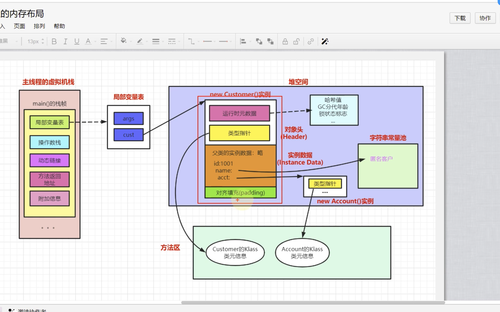
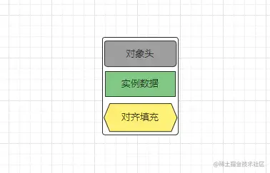
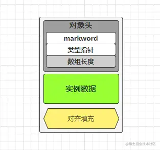
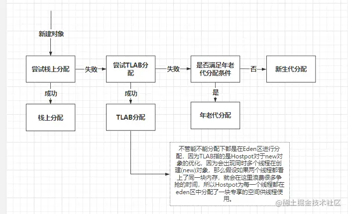
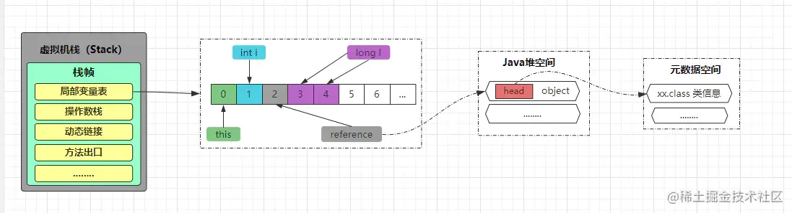

4、JVM对象内存布局
一、Java对象在内存中的布局
Java对象一般在内存中的布局通常由对象头、实例数据、对齐填充三部分组成。
1.1、对象头（Object Header）
Java对象头包含了运行时元数据MarkWord和类型指针（ClassMetadataAddress/KlassWord），如果是数组对象，还会存在数组长度
| 虚拟机位数 | 对象头结构信息 | 说明 | 大小 |
|---|---|---|---|
| 32位 | MarkWord | HashCode、分代年龄、是否偏向锁和锁标记位 | 4byte/32bit |
| 32位 | ClassMetadataAddress/KlassWord | 类型指针指向对象的类元数据，JVM通过这个指针确定该对象是哪个类的实例 | 4byte/32bit |
| 32位 | ArrayLenght | 如果是数组对象存储数组长度，非数组对象不存在 | 4byte/32bit |
| 虚拟机位数 | 对象头结构信息 | 说明 | 大小 | |
|---|---|---|---|---|
| 64位 | MarkWord | unused、HashCode、分代年龄、是否偏向锁和锁标记位 | 8byte/64bit | |
| 64位 | ClassMetadataAddress/KlassWord | 类型指针指向对象的类元数据，JVM通过这个指针确定该对象是哪个类的实例 | 8byte/64bit | 开启指针压缩的情况下为4byte/32bit |
| 64位 | ArrayLenght | 如果是数组对象存储数组长度，非数组对象不存在 | 4byte/32bit |
1.2、实例数据（Instance Data）
实例数据是指一个聚合量所有标量的总和，也就是是指当前对象属性成员数据以及父类属性成员数据。
1.3、对齐填充（Padding）
对象填充在一个对象中可能存在，也可能是不存在的。因为在64bit的虚拟机中，《虚拟机规范》中规定了：为了方便内存的单元读取、寻址、分配，Java对象的总大小必须为8的整数倍，所以当一个对象的对象头+实例数据大小不为8的整数倍的时候，就需要对齐填充，填充为8的整数倍。
1.4、指针压缩（CompressedOops）
指针压缩属于JVM的一种优化思想，一方面可以节省很大的内存开支，第二方面也可以方便JVM跳跃寻址（稍后分析），在64bit的虚拟机中为了提升内存的利用率，所以出现了指针压缩这一技术，指针压缩的技术会将Java程序中的所有引用指针(类型指针、堆引用指针、栈帧内变量引用指针等)都会压缩一半，而在Java中一个指针的大小是占一个字宽单位的，在64bit的虚拟机中一个字宽的大小为64bit，所以也就意味着在64位的虚拟机中，指针会从原本的64bit压缩为32bit的大小，而指针压缩这一技术在JDK1.7之后是默认开启的。
而在JVM中开启指针压缩后，对于对象位置的寻址计算存在三种方式，如下：
- ①如果堆的高位地址小于32GB，说明不需要基址
base就能定位堆中任意对象，这种模式被称为Zero-based Compressed Oops Mode，计算公式如下：- 计算公式：add=0+offset∗8add = 0 + offset * 8 add=0+offset∗8
- 计算前提：highheap<32GBhigh_{heap} < 32GBhighheap<32GB
- ②如果堆高位大于等于
32GB，说明需要base基地址，这时如果堆空间小于4GB，说明基址+偏移能定位堆中任意对象，如下：- 计算公式：add=base+offsetadd = base + offset add=base+offset
- 计算前提：sizeheap<4GBsize_{heap} < 4GBsizeheap<4GB
- ③如果堆空间大小处于
4GB与32GB之间，这时只能通过基址+偏移x缩放scale（Java中缩放为8），才能定位堆中任意对象，如下：- 计算公式：add=base+offset∗8add = base + offset * 8 add=base+offset∗8
- 计算前提：4GB<=sizeheap<32GB4GB <= size_{heap} < 32GB4GB<=sizeheap<32GB
二、Java对象分配过程
Java中创建对象最常用的方式就是new关键字，但除了new关键字，也存在其他方式：
- 通过调用
Class类的newInstance方法完成对象创建 - 通过反射机制调用
Constructor类的newInstance方法完成对象创建 - 类实现
Clonable接口，通过clone方法克隆对象完成创建 - 从本地文件、网络中读取二进制流数据，通过反序列化完成创建
- 使用第三方库
Objenesis完成对象创建
无论哪种方式创建对象，虚拟机都会将创建对象分为三步：类加载检测、内存分配以及对象头设置。
==创建对象的步骤==
1、判断对象对应的类是否加载、链接、初始化
2、为对象分配内存
2.1、指针碰撞
2.2、空闲列表
3、处理并发安全问题
4、初始化分配到空间
5、设置对象的对象头
6、执行init方法进行初始化
2.1、类加载机制
当虚拟机遇到一条创建指令时，首先会去检查这个指令的参数是否能在常量池中定位到一个类的符号引用，同时检测这个符号引用代表的类是否被加载解析初始化过。如果没有，在双亲委派机制下，使用当前类加载器以当前创建对象的全限定名作为key值进行查找对应的.class文件，如果没有找到，则抛出classNotFoundException异常，找到了则先完成类加载过程，完成加载后，再开始为其对象分配内存。
2.2、内存分配
当一个对象的类已经被加载后，会依据第一阶段分析的方式去计算出该对象所需的内存空间大小，计算出大小后会开始对象分配过程，而内存分配就是指在内存中划出一块与对象大小相等的区域出来，然后将对象放进去的过程。但需要额外注意的是：Java的对象并不是直接一开始就尝试在堆上进行分配的，分配过程如下：
2.2.1、栈上分配
如果对象被分配在栈上，那么该对象就无需GC机制回收它，该对象会随着方法栈桢的销毁随之自动回收。但如果一个对象的大小超过了栈可用空间（栈总大小-已使用空间），那么此时就不会尝试将对象进行栈上分配。
2.2.2、TLAB分配
TLAB全称叫做Thread Local Allocation Buffer，是指JVM在Eden区为每条线程分配的一块私有缓冲内存（为了防止多个线程竞争同一块内存区域分配对象）。
2.2.3、年老代分配
初次分配时，大对象直接进入年老代。
一般对象进入年老代的情况只有三种：大对象、长期存活对象以及动态年龄判断符合条件的对象，在JVM启动的时候你可以通过-XX:PretenureSizeThreshold参数指定大对象的阈值，如果对象在分配时超出这个大小，会直接进入年老代。
2.2.4、新生代分配
如果栈上分配、TLAB分配、年老代分配都未成功，此时就会来到Eden区尝试新生代分配。而在新生代分配时，会存在两种分配方式：
①指针碰撞：指针碰撞是Java在为对象分配堆内存时的一种内存分配方式，一般适用于
Serial、ParNew等不会产生内存碎片、堆内存完整的的垃圾收集器。- 分配过程：堆中已用分配内存和为分配的空闲内存分别会处于不同的一侧，通过一个指针指向分界点区分，当JVM要为一个新的对象分配内存时，只需把指针往空闲的一端移动与对象大小相等的距离即可。
②空闲列表：与指针碰撞一样，空闲列表同样是Java在为新对象分配堆内存时的一种内存分配方式，一般适用于CMS等一些会产生内存碎片、堆内存不完整的垃圾收集器。
- 分配过程：堆中的已用内存和空闲内存相互交错，JVM通过维护一张内存列表记录可用的空闲内存块信息，当创建新对象需要分配内存时，从列表中找到一个足够大的内存块分配给对象实例，并同步更新列表上的记录，当GC收集器发生GC时，也会将已回收的内存更新到内存列表
三、一个对象从生到死的历程
3.1、对象的访问方式
在Java中对象都是通过reference访问的，reference主要分为两种访问方式，一种为句柄访问，另一种为直接指针访问。
3.1.1、句柄访问
Java堆中会专门划分出一块内存区域作为句柄池，用于存储所有引用地址，reference中存储的就是对象的句柄地址，句柄包含对象实例数据和类型数据的信息，如下：
当需要使用对象时，会先访问reference中存储的句柄地址，然后根据句柄地址中存储的实际内存地址再次定位后，访问对象在内存中的数据。
好处：reference中存储稳定句柄地址，对象被移动（垃圾收集时对象移动很普遍）时只会改变句柄中实例数据指针，reference本身不需要
3.1.2、直接指针访问
如果采用直接指针的方式访问，那么reference中存储的就是对象在堆中的内存地址，而类型指针则放到了对象头中存储
 这种访问模式下，当需要使用对象时，可以直接通过reference中存储的堆内存地址定位并访问对象数据。
HotSpot虚拟机中是采用指针的访问方式，通过直接指针定位并访问对象数据（但使用Shenandoah收集器的话，也会有一次额外的转发）。
四、对象引用类型-强软弱虚全面分析
4.1 强引用类型(StrongReference)
通过new指令创建出来的对象都属于强引用。
Object obj = new Object();
通过new创建出来的Object实例会被分配在堆中存储，而变量obj会被放在当前方法对应的栈桢中的局部变量表中存储，在运行时可以直接通过obj变量操作堆中的实例对象，那么obj就是该Object实例对象的强引用。
4.2、软引用类型(SoftReference)
软引用是指使用java.lang.ref.SoftReference类型修饰的对象，当一个对象只存在软引用时，在堆内存不足的情况下，该引用级别的对象将被GC机制回收。不过当堆内存还充足的情况下，该引用级别的对象是不会被回收的，所以平时如果需要实现JVM级别的简单缓存，那么可以使用该级别的引用类型实现。使用案例如下：
SoftReference<HashMap> cacheSoftRef = |
如上案例中便通过软引用类型实现了一个简单的缓存器。
4.3弱引用类型（WeakReference）
弱引用类型是指使用java.lang.ref.WeakReference类型修饰的对象，与软引用的区别在于：弱引用类型的对象生命周期更短，因为弱引用类型的对象只要被GC发现，不管当前的堆内存资源是否紧张，都会被GC机制回收。不过因为GC线程的优先级比用户线程更低，所以一般不会立马发现弱引用类型对象，因此一般弱引用类型的对象也会有一段不短的存活周期。
从软引和弱引的特性上来看，它们都适合用来实现简单的缓存机制，用于保存那些可有可无的缓存数据，内存充足时可以稍微增加程序的执行效率，而内存紧张时会被回收，不会因此导致OOM。
4.4、虚引用类型(PhantomReference)
虚引用也在有些地方被称为幽灵引用，虚引用是指使用java.lang.ref.PhantomReference类型修饰的对象，不过在使用虚引用的时候是需要配合ReferenceQueue引用队列才能联合使用。与其他的几种引用类型不同的是：虚引用不会决定GC机制对一个对象的回收权，如果一个对象仅仅存在虚引用，那么GC机制将会把他当成一个没有任何引用类型的对象，随时随刻可以回收它。不过它还有个额外的用途：跟踪垃圾回收过程，也正是由于虚引用可以跟踪对象的回收时间，所以也可以将一些资源释放操作放置在虚引用中执行和记录。
 wechat
wechat alipay
alipay